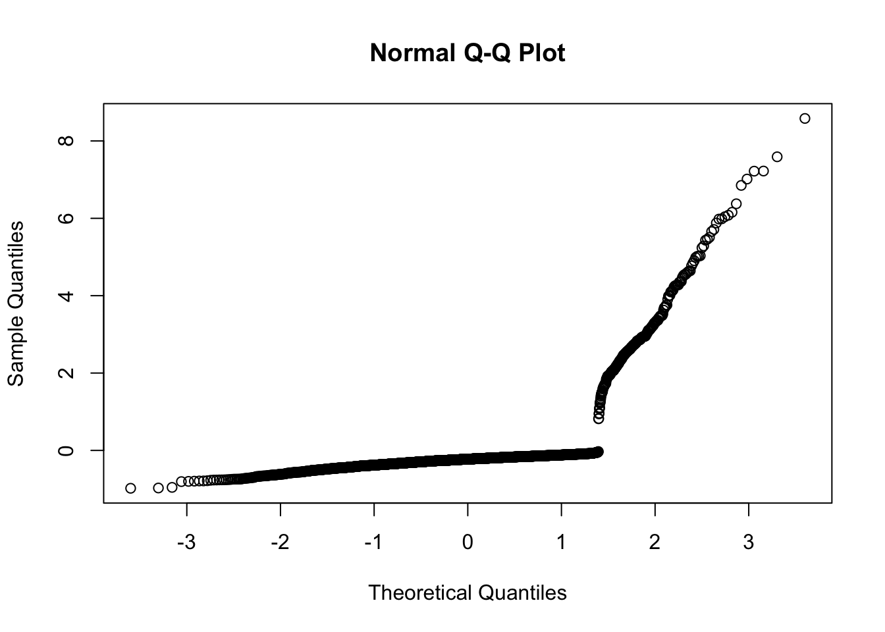

The interaction between two predictors or effect modification is quite similar to what we saw in linear regression. We will revisit this concept since its interpretation is typically done in terms of OR (whereas the intearction term is typically added on the log-odds scale). This deserves explanation. The general form of an interaction model with two covariates \(x_1\) and \(x_2\) is: \(logit(p)= \beta_0 + \beta_1 x_1 + \beta_2 x_2 + \beta_3 x_1\times x_2\) where \(logit(p)\) is shortened version of \(\log(p/(1-p))\) and, for simplicity, we have simplified the notation since \(p=p(y=1 | x_1, x_2, x_1\times x_2)\). Also \(x_1\) and \(x_2\) can be binary or continuous with the convention that a binary indicator is always coded 0/1.
10.1.1 Interaction between two binary predictors {.unnumbered}}
We again consider the WcGS study and consider the potential interaction between arcus and a binary indicator for patients aged over 50 called bage_50. The specification of the logistic model in Stata or R follows the general syntax used with the linear model. You can either define “by hand” the interaction term and add it to the model with the the two covariates arcus and bage_50 or let the software do the job for you. We will use the second approach here but it critical to be sure about the coding (0/1) or tell Stata or R to create the right indicators for you. The Stata syntax will then be: logistic chd69 i.arcus##i.bage_50, coef and R’s: glm(chd69 \(\sim\) factor(arcus)\(\star\)factor(bage_50), family=binomial, data=wcgs). The command factor() is not necessary when both covariates are coded 0/1. Note that in the Stata command we used the option coef to avoid reporting the ORs. The following results are obtained:
R code and output
Code
wcgs <-read.csv("wcgs.csv")wcgs<-data.frame(wcgs)wcgs$bage_50<-as.numeric(wcgs$age>=50)out1<-glm(chd69 ~ arcus*bage_50, family=binomial, data=wcgs)summary(out1) ## ## Call:## glm(formula = chd69 ~ arcus * bage_50, family = binomial, data = wcgs)## ## Coefficients:## Estimate Std. Error z value Pr(>|z|) ## (Intercept) -2.8829 0.1089 -26.467 < 2e-16 ***## arcus 0.6480 0.1789 3.623 0.000292 ***## bage_50 0.8933 0.1721 5.190 2.11e-07 ***## arcus:bage_50 -0.5921 0.2722 -2.175 0.029640 * ## ---## Signif. codes: 0 '***' 0.001 '**' 0.01 '*' 0.05 '.' 0.1 ' ' 1## ## (Dispersion parameter for binomial family taken to be 1)## ## Null deviance: 1771.2 on 3151 degrees of freedom## Residual deviance: 1730.9 on 3148 degrees of freedom## (2 observations deleted due to missingness)## AIC: 1738.9## ## Number of Fisher Scoring iterations: 5
The interaction term is significant (\(p=0.03\)) which means that we cannot igore the age effect when considering the association of arcus with CHD. Let’s use the notation introduced above, \(x_1\) = arcus and \(x_2\) = bage_50 and consider a young patient (less than 50) without arcus. The log-odds of CHD occurence is: \(\hat\beta_0=-2.88\) up to rounding. Compare with someone in the same age category with arcus, the log-odds of CHD occurence is: \(\hat\beta_0+\hat\beta_1=-2.23\), therefore the OR for arcus in this age group is: \(\exp(\hat\beta_0+\hat\beta_1)/\exp(\hat\beta_0)=\exp(\hat\beta_1)=1.91\), 95\(\%\)CI=(1.34 ; 2.70). By the same token, the log-odds of CHD occurence for a patient aged 50+ without arcus is: \(\hat\beta_0+\hat\beta_2=-2.88+.89=-1.99\) and changes to \(\hat\beta_0+\hat\beta_1+\hat\beta_2+\hat\beta_3=-1.93\) for patients with arcus, therefore the OR for arcus in patients aged 50+ is \(\exp(\hat\beta_1+\hat\beta_3)=1.06\) by taking the ratio of the corresponding exponentiated terms. To get a 95\(\%\) CI for this OR we need to use lincom or the corresponding R command yielding OR=1.06, 95\(\%\)CI=(0.71 ; 1.58).
R code and output
Code
library(multcomp)## Loading required package: mvtnorm## Loading required package: survival## Loading required package: TH.data## Loading required package: MASS## ## Attaching package: 'TH.data'## The following object is masked from 'package:MASS':## ## geyserlincom <-glht(out1,linfct=c("arcus+arcus:bage_50 =0"))out2<-summary(lincom)$testOR<-exp(out2$coefficients)lower<-exp(out2$coefficients -1.96*out2$sigma)upper<-exp(out2$coefficients +1.96*out2$sigma)# estimate + 95% CI for the ORlincom## ## General Linear Hypotheses## ## Linear Hypotheses:## Estimate## arcus + arcus:bage_50 == 0 0.05591cbind(OR,lower,upper)## OR lower upper## arcus + arcus:bage_50 1.0575 0.7072835 1.581129
Stata code and output
Code
use wcgs.dtagen bage50=(age>=50)** OR for arcus in patients aged less than 50, direct from outputlogistic chd69 arcus##bage50** OR for arcus in patients aged >= 50, uselincomlincom 1.arcus + 1.arcus#1.bage50, or## Logistic regression Number ofobs = 3,152## LR chi2(3) = 40.33## Prob > chi2 = 0.0000## Log likelihood = -865.43251 Pseudo R2 = 0.0228## ## ------------------------------------------------------------------------------## chd69 | Odds ratio Std. err. z P>|z| [95% conf. interval]## -------------+----------------------------------------------------------------## 1.arcus | 1.911643 .3419235 3.62 0.000 1.346349 2.714287## 1.bage50 | 2.4431 .4205159 5.19 0.000 1.743529 3.423366## |## arcus#bage50 |## 1 1 | .5531892 .150593 -2.17 0.030 .3244544 .943178## |## _cons | .0559748 .0060971 -26.47 0.000 .0452142 .0692964## ------------------------------------------------------------------------------## Note: _consestimates baseline odds.## ## ## ( 1) [chd69]1.arcus + [chd69]1.arcus#1.bage50 = 0## ## ------------------------------------------------------------------------------## chd69 | Odds ratio Std. err. z P>|z| [95% conf. interval]## -------------+----------------------------------------------------------------## (1) | 1.0575 .2170202 0.27 0.785 .7072887 1.581117## ------------------------------------------------------------------------------
In other words, the OR for arcus is \(\exp(\hat\beta_1)=1.91\), 95% CI=(1.34 ; 2.70) in patients aged less than 50 and \(\exp(\hat\beta_1+\hat\beta_3)=1.06\), 95% CI= (0.71 ; 1.58) in patients aged 50+. We clearly see here the effect modification at play, the OR in patients aged less than 50 is multiplied by \(\exp(\hat\beta3)\) to provide the OR in patients aged 50+. The additive interaction term on the log-odds scale translates into a multiplicative factor for the OR (due to the well known property of the exponential function).
10.1.2 Interaction between a binary indicator and a continuous predictor {.unnumbered}}
Interactions between a continuous variable and a binary predictor can be handled in a similar way. The is the purpose of next activity.
Investigation:
start by reading the compulsory reading:
[@vittinghoff2012] Chapter 5. Logistic regression (Section 5.2.4. p 163-165)
This reading explains how to introduce a possible interaction the between age seen this time as a continuous variable and arcus (coded 0/1).
try to reproduce the output
can you give the association between chd69 and age in patients without arcus? Provide the OR, its 95% CI and give an interpretation of the association.
give the association between chd69 and age in patients with arcus. Provide the OR, its 95% C and give an interpretation of the association. Does it make sense to add an interaction in this model?
Can we interpret the coefficient of arcus alone? How can we get a more meaningful coefficient for arcus (either on the log-odds scale or as an OR)?
10.2 Prediction {.unnumbered}}
Just as we did for the linear model we can create predictions for all patients in the dataset and beyond. What does it mean in this context? Let rewrite the formula defining the logistic model for a given sample of \(i=1,\dots,n\) observations. Again we simplify the notation and note \(p_i\) the probability of observing an event (e.g. cHD in our example) for patient \(i\) given all their characteristics \(x_{1i},\dots, x_{pi}\). It is convenient to create the vector of covariates for this individual \(x_i=(1,\)x_{1i},, x_{pi})^T$, the leading one being added for the intercept. The logistic model then stipulates that:
\[log(p_i/(1-p_i))=\beta_0 + \beta_1 x_{1i}+\dots+\beta_p x_{pi} =x_i^T\beta,\] where \(\beta=(\beta_0,\beta_1,\dots\,beta_p)^T\) is the vector or parameter. It’s very similar to the formula in linear for the mean response in the linear model (up to the logistic transformation called link). It’s possible to extract \(p_i\) from this equation by using the inverse transformation yielding \(p_i=\exp(x_i^T\beta)/(1+\exp(x_i^T\beta))\). This expression represents the probability of the patient experiencing the event and is between 0 and 1 [why?]. Now, it’s easy to get the predicted probability or prediction noted \(\hat\$p_i\) for patient \(i\) by plugging in the MLE \(\hat\beta\) for \(\beta\) in the formula, i.e.:
\[\hat p_i=\frac{\exp(x_i^T\hat\beta)}{1+\exp(x_i^T\hat\beta)}\] By the same token we can compute the probability of a new patient experiencing an event by using a different set of covariates \(x_{new}\). All statistical packages provide predicted values for all patients using a command predict or equivalent. AS an example we can compute the predicted probabilities of CHD occurence for all patients in the dataset. Also, the same command(s) can be used for a new patient with age=40, bmi=25, chol=400, sbp=130, smoke=0, dibpat=0. To avoid issue with the rescaling/centring we will refit the model with the original variables. The Stata and R code can be found here and give the same results, i.e. \(\hat p=0.13\), 95\(\%\)CI=(0.079 ; 0.216).
R code and output
Code
myvars <-c("id","chd69", "age", "bmi", "chol", "sbp", "smoke", "dibpat")wcgs1 <- wcgs[myvars]wcgs1=wcgs1[wcgs1$chol <645,]wcgs1cc=na.omit(wcgs1) # 3141 x 11model1<-glm(chd69 ~ age + chol + sbp + bmi + smoke + dibpat, family=binomial, data=wcgs1cc)summary(model1)## ## Call:## glm(formula = chd69 ~ age + chol + sbp + bmi + smoke + dibpat, ## family = binomial, data = wcgs1cc)## ## Coefficients:## Estimate Std. Error z value Pr(>|z|) ## (Intercept) -12.270864 0.982111 -12.494 < 2e-16 ***## age 0.060445 0.011969 5.050 4.41e-07 ***## chol 0.010641 0.001527 6.970 3.18e-12 ***## sbp 0.018068 0.004120 4.385 1.16e-05 ***## bmi 0.054948 0.026531 2.071 0.0384 * ## smoke 0.603858 0.141086 4.280 1.87e-05 ***## dibpat 0.696569 0.144372 4.825 1.40e-06 ***## ---## Signif. codes: 0 '***' 0.001 '**' 0.01 '*' 0.05 '.' 0.1 ' ' 1## ## (Dispersion parameter for binomial family taken to be 1)## ## Null deviance: 1774.2 on 3140 degrees of freedom## Residual deviance: 1589.9 on 3134 degrees of freedom## AIC: 1603.9## ## Number of Fisher Scoring iterations: 6#wcgs1cc$pred.prob <- fitted(model1)pred<-predict(model1,type ="response",se.fit =TRUE)pred<-predict(model1,type ="response")# prediction + 95% CI for a patient age = 40, bmi=25, chol =400, sbp=130, smoke=0, dibpat=0new <-data.frame(age =40, bmi=25, chol =400, sbp=130, smoke=0, dibpat=0)out <-predict(model1, new, type="link",se.fit=TRUE)mean<-out$fitSE<-out$se.fit# 95% CI for the linear predictor (link option)CI=c(mean-1.96*SE,mean+1.96*SE)# 95% CI for the CHD probability by transformation Via the reciprocal of logit = expitf.expit<-function(u){exp(u)/(1+exp(u))}f.expit(c(mean,CI))## 1 1 1 ## 0.13305183 0.07875639 0.21600251
Stata code and output
Code
use wcgs.dtadropifmissing(chd69) | missing(bmi) | missing(age) | missing(sbp) | missing(smoke) | missing(chol) | missing(dibpat) dropif chol ==645** proba CHD as a functionof age, bmi, chol, sbp, smoke, dibpat** only for patients in the datasetlogistic chd69 age chol sbp bmi smoke dibpat, coefpredict proba, pr** prediction for a new patient: age = 40, bmi=25, chol =400, sbp=130, smoke=0, dibpat=0adjust age = 40 bmi=25 chol =400 sbp=130 smoke=0 dibpat=0, ci pr** by hand transforming the linear predictor and its 95% CIadjust age = 40 bmi=25 chol =400 sbp=130 smoke=0 dibpat=0, cidisp exp( -1.87424)/(1+exp(-1.87424))disp exp(-2.45935)/(1+exp(-2.45935))disp exp(-1.28913)/(1+exp(-1.28913))## (12 observations deleted)## ## (1 observation deleted)## ## ## Logistic regression Number ofobs = 3,141## LR chi2(6) = 184.34## Prob > chi2 = 0.0000## Log likelihood = -794.92603 Pseudo R2 = 0.1039## ## ------------------------------------------------------------------------------## chd69 | Coefficient Std. err. z P>|z| [95% conf. interval]## -------------+----------------------------------------------------------------## age | .0604453 .011969 5.05 0.000 .0369866 .0839041## chol | .0106408 .0015267 6.97 0.000 .0076485 .0136332## sbp | .0180675 .0041204 4.38 0.000 .0099917 .0261433## bmi | .0549478 .0265311 2.07 0.038 .0029478 .1069478## smoke | .6038582 .1410863 4.28 0.000 .3273341 .8803823## dibpat | .6965686 .1443722 4.82 0.000 .4136043 .979533## _cons | -12.27086 .9821107 -12.49 0.000 -14.19577 -10.34596## ------------------------------------------------------------------------------## ## ## ## -------------------------------------------------------------------------------------------------------------------------------## Dependent variable: chd69 Equation: chd69 Command: logistic## Covariates set to value: age = 40, bmi = 25, chol = 400, sbp = 130, smoke = 0, dibpat = 0## -------------------------------------------------------------------------------------------------------------------------------## ## ----------------------------------------------## All | pr lb ub## ----------+-----------------------------------## | .133052 [.078757 .216001]## ----------------------------------------------## Key: pr = Probability## [lb , ub] = [95% Confidence Interval]## ## ## -------------------------------------------------------------------------------------------------------------------------------## Dependent variable: chd69 Equation: chd69 Command: logistic## Covariates set to value: age = 40, bmi = 25, chol = 400, sbp = 130, smoke = 0, dibpat = 0## -------------------------------------------------------------------------------------------------------------------------------## ## ----------------------------------------------## All | xb lb ub## ----------+-----------------------------------## | -1.87424 [-2.45935 -1.28913]## ----------------------------------------------## Key: xb = Linear Prediction## [lb , ub] = [95% Confidence Interval]## ## .13305188## ## .07875748## ## .2160001
Some nice plots of predicted probabilities versus a (continuous) covariate can be obtained using the command margins available both in Stata and R - see lecture 1. Note that the predicted probabilities you may get from a logistic regression model used to analyse case control studies are not reliable. Only ORs can be estimated with such a retrospective design. We defer for now the notion of prediction accuracy, i.e. how well a logistic regression model predicts. This will be discussed in week 11.
10.2.1 Investigation:
calculate the predicted probability of CHD occurence for a patient with the following characteristics: age=50, BMI=27, chol=200, sbp=150, smoke=1, dibpat=0. Give the 95% CI.
Represent the probability of an event as a function of age for a particular patient profile, e.g. use BMI=27, chol=200, sbp=150, smoke=1, dibpat=0 and let age free to vary. Hint: look at the Stata/R code provided in the lecture to produce this plot using the command/library margins and related plots.
Contrast with a plot of the CHD probability vs age for smoke=0, the other characteristics remaining the same. Draw the 2 plots side-by-side.
10.3 Residuals and other diagnostic tools {.unnumbered}}
Raw residuals were calculated as the difference between observed and fitted values with several standardised versions available. A natural way to extend this idea in logistic regression is to compute the Pearson residuals defined as a standardised difference beween the binary endpoint and the prediction, i.e. \[r_{P,i}=\frac{y_i-\hat p_i}{\sqrt{\hat p_i(1-\hat p_i)}}\] In other words, the Pearson residual has the following structure “(observed - expected)/SD(observed)” for the corresponding observation. The standardisation performed here corresponds to dividing by the standard deviation of the response \(y_i\) both other variants have also been suggested. They cannot be easily represented due to the discrete nature of the outcome. Another form of residuals exists for this model, they are called the deviance residuals (\(r_{D,i}\)). The formula is omitted for simplicity but the deviance residuals measure the disagreement between the maxima of the observed and the fitted log-likelihood functions. Since logistic regression uses the maximal likelihood principle, the goal in logistic regression is to minimize the sum of the deviance residuals, so we do something similar to what we do in linear regression. Both types of residuals are readily available in standard packages. One can wonder whether the Pearson or the deviance residuals are normally distributed and the answer is “no”. A normal probability plot of either type is usually of little interest since the plot will typically show a kick (a broken line) due to the discreteness of the outcome, even when we simulate data from a logistic regression model. Still other plots can be very helpful such as the plot of the residuals versus prediction or an index plot. Before we examine this in detail on an example, the notion of leverage also exist in logistic regression and is correspond to the diagonal element \(h_{ii}\) of the “hat matrix” that has a slightly more complicated definition than in linear model but a similar interpretation. It is not always easy to see on scatter points whether an observation is a leverage point since the fitted curve is no longer a hyperplane geometrically. An approximation to the Cook’s distance is and the various dfbetas are also available in this model. They allow us to examine whether some observations are unduly influential on the fit.
Lecture 2 in R
[Download video here]https://www.dropbox.com/s/i8vaa1cfi326kjv/RM1_week10_lecture2_R.mp4?dl=1)
Cheking the model assumptions is just as important in logistic regression as it is in linear regression. First, we work under the assumption that the observations are independent. If some form of clustering is anticipated, a more complex modelling is required. This is essentially a design issue and in most cases we know from the start whether this assumption is met or not. Since we do not have an error term per se’, no checks of distributional assumptions analogous to normally distributed residuals and constant variance are required. This comes from the fact that the probability distribution for binary outcomes has a simple form that does not include a separate variance parameter. However, we still need to check linearity and whether outliers or influential observations are present in the data making inference invalid. We will defer the examination of linearity until next week and focus on outliers and influential observations in this section.
As an example, we use the final model proposed by Vittinghof et al. 2012) for chd69 of the WGCS study. The authors don’t delve into their model building strategy so we will not speculate for now and simply reproduce their analysis with some additional checks. The selected covariates are age_10, chol_50, sbp_50, bmi_10, smoke, dibpat, and two interactions terms involving 2 continuous previous predictors named bmichol and bmisbp. Their results can be reproduced using the code below. Note that they have scaled and CENTRED variables otherwise we get different results. The sample means for age, cholesterol, SBP and BMI were used to centre the variables.
There are different types of useful residual plots we can produce: one is an index plot displaying the Pearson (or deviance) residual vs the ordered observation number in the dataset. This plot allows us to identify large residuals. Another possibly the plot of the Cook’s distance vs the predicted probability. These two plots can be found side-by-side in the figure below, see also p. 175-176 in Vittinghof et al. (2012). You can also examine other diagnostic tools like leverage and draw other plots e.g. Pearson (or deviance) residuals vs probabilities
We clearly see the grouping of residuals by CHD status on the left panel but there is no indication that an observation has a residual that is much larger than the others. Note that some of these residuals are well above 2 and that’s perfectly fine. The standardisation carried out in the standard Pearson residuals does not mean that their variance is 1. A similar plot can be produced for the deviance residuals (omitted) and will lead to a similar interpretation. The plot of the Cook’s distance vs the predicted probabilities identifies two observations with a slightly bigger Cook’s distance (CD). We can identify who they are by sorting the data by decreasing CD and printing the top 2-5 observations. The one with the largest CD is patient 10078 with CHD who does not smoke, is very obese (BMI=38.9) and a cholesterol below average (188 mg/dL = 4.86 mmol/L). The next one is case 12453 who did not have CHD, smokes and has a very high SBP (196). Although these two observations stand out, they are not overly influential on the fit. A case-deletion and refit would lead us to a similar conclusion. Note that you may get different values in Stata but similar looking plots (up tp scaling). This has to do with the way the Cook’s distance is calculated. A lot of other plots can be produced like in linear regression: you can for instance compute the dfbetas (one per parameter) and plot them to identify influential observations or use leverage values again for other plots. There is no real equivalent of residuals-squared versus leverage. Plot of Pearson or deviance residuals versus a particular covariate are not particularly useful to identify remaining structures than the model may not have captured (like a quadratic trend in age). This will be examined using splines - see week 11 material.
We said earlier that we should not expect the Pearson or deviance residuals to be normally distributed. What happens if we draw a normal probability plot anyway? The figure below displays such a plot and we can clearly see the separation between two groups based on the outcome status and plot is a broken line.

R-users may be able to produce a more meaningful plot using the library gamlss . This library allows you to fit a large variety of models that will be explored in RM2. You can force gamlss to fit a logistic regression model and get the exact same fit as the standard glm command. The code can be found here. The advantage is that a standard plot of the output gives you a much nicer plot of residuals. These resdiduals are called randomised quantile residuals due to Dunn and Smyth (2012). They essentially use randomisation to achieve continuous residuals when the response variable is discrete. Irrespective of the technicality (details to be given in RM2), R produces very nice plots for these residuals.
R code and output
Code
par(mfrow=c(1,1))require(gamlss)## Loading required package: gamlss## Warning in library(package, lib.loc = lib.loc, character.only = TRUE,## logical.return = TRUE, : there is no package called 'gamlss'out4<-gamlss(chd69 ~ age_10 + chol_50 + sbp_50 + bmi_10 + smoke + dibpat + bmichol + bmisbp, family=BI, data=wcgs2cc)## Error in gamlss(chd69 ~ age_10 + chol_50 + sbp_50 + bmi_10 + smoke + dibpat + : could not find function "gamlss"plot(out4)## Error in eval(expr, envir, enclos): object 'out4' not found
A nice straight QQ plot of this randomised quantile residuals is produced meaning that there are no particular issue in the residuals to be concerned about. R-users can try to run the code given above and first verify that gamlss and glm gave the same fit. The plot command issued right after the fit returns though a completely different figure due to a different implementation in gamlss. There is no equivalent to this function gamlss in Stata that we know of.
The following are the key takeaway messages from this week:
The concept of interaction is similar to the one used in linear regression when expressed on the logit scale. Effect modification is mutiplicative on the odds-ratio scale
Predicted probabilities of an event adn 95% CI can be calculated for any patient’s profile. Transforming the linear predictor and its 95% CI to the probability scale is the way to go.
Residuals can also be extended (e.g. the Pearson and deviance residuals) but they are not normally distributed.
Other diagnostic tools (e.g. leverage, Cook’s distance) exist and have similar interpretarion. They cam help identify outliers and influential observations.